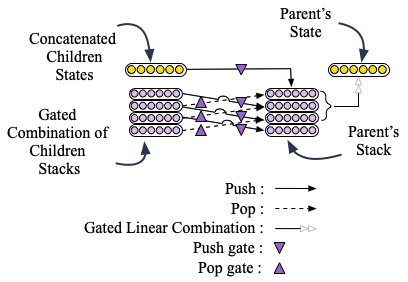
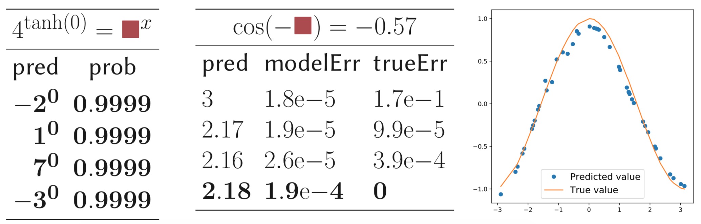

Forough Arabshahi
Carnegie Mellon University
Projects
-
Humans have impressive problem solving abilities. For example, in the context of mathematical problem solving, once they learn the concept of addition or multiplication, they are capable of applying them to unseen numbers with arbitrary (potentially infinite) compositionality. Are neural networks also capable of doing this? We call this the capability of extrapolating to harder problems. Recursive neural networks have the potential to achieve extrapolation because they are able to capture the compositionality of tree-structured data such as mathematical equations. However, we show that recursive networks are prone to error propagation along trees of high depth and are unable to capture long range dependencies effectively.
To overcome this, we propose Tree Stack Memory Units (Tree-SMUs), a novel memory augmented recursive neural network whose nodes consist of a differentiable stack. This architecture enables extrapolation by increasing the memory capacity of Tree-LSTMs by replacing the 1-dimensional memory vector of an LSTM cell with a 2-dimensional memory matrix with the data structure of a neural stack. A high level schematic of this architecture is shown in the image below.

Each SMU cell learns to read from its stack and to write to it by combining the stacks and states of its children through gating. This gating mechanism is shown in the figure below.
We show that this architecture allows us to achieve extrapolation to mathematical problems than are much harder than the ones seen during training. This is because this architecture improves both the local and global representation of compositional data. From a local perspective, the stack structure encourages the model to learn a better representation for functions. This is because in applications such as neural programming, most of the programs and functions can be implemented using recursion, which is often more compact and efficient compared to its iterative counterpart. This compactness makes it easier for neural networks to model them. It is known that stacks are used to implement and execute a recursive function. Therefore, having access to a stack structure encourages the model to learn a better representation for each function. Moreover, the state of each node in a recursive neural network is computed using the states of its children. From a global perspective, the stack enables each node in the Tree-SMU to also have indirect access to the state of its descendants by popping items from their stack. This helps the model to defeat error propagation by preserving values along the tree for longer.
Our code and data is publicly available here
-
Speech recognition technologies are achieving human parity. As a result, end users can now access different functionalities of their phones and computers through spoken instructions via a natural language processing interface referred to as a conversational agent. Current commercial conversational agents such as Siri, Alexa or Google Assistant come with a fixed set of simple functions like setting alarms and making reminders, but are often not able to cater to the specific phrasing of a user or the specific action a user needs. For example, assume that the user wants to add a functionality for resetting an alarm based on the weather forecast for the next day, as demonstrated by the following utterance: “whenever it snows at night, wake me up 30 minutes early”. The user can instruct this task to the agent by breaking it down into a sequence of actions that the agent already knows: 1) check the weather app, 2) see if the forecast is calling for snow, 3) if yes, then reset the time of the alarm to 30 minutes earlier. This set of instructions result in a logical form or a semantic parse for this specific new utterance. However, this approach can be used in practice only if the agent is capable of generalizing from this single new utterance to similar utterances such as “if the weather is rainy, then set an alarm for 1 hour later”. We refer to this problem as one-shot semantic parsing.
In this paper, we address this one-shot semantic parsing task and present a semantic parser that generalizes to out-of-domain utterances by seeing a single example from that domain. We propose "Look-up and adapt", a one-shot semantic parser, that generalizes to out-of-domain examples by learning a general strategy for parsing an unseen utterance through adapting the logical forms of seen utterances, instead of learning to generate a logical form from scratch. Our parser maintains a memory consisting of a representative subset of the seen utterances paired with their logical forms. Given an unseen utterance, our parser works by looking up a similar utterance from the memory and adapting its logical form until it fits the unseen utterance. Moreover, we present a data generation strategy for constructing utterance-logical form pairs from different domains. Our results show an improvement of up to 68.8% on one-shot parsing under two different evaluation settings compared to the baselines.
Our data is publicly available here
-
We introduce a flexible and a scalable neural programming framework that combines the knowledge of symbolic expressions with black-box function evaluations. We demonstrate that this approach outperforms existing methods by a significant margin, using only a small amount of training data. Our main contributions are (1) We design a neural architecture to incorporate both symbolic expressions and black-box function evaluation data. (2) We eval- uate it on tasks such as equation verification and completion in the domain of mathematical equation modeling. (3) We propose a data generation strategy for both symbolic expressions and black-box function evaluations that results in good balance and coverage.
We employ tree LSTMs to incorporate the symbolic expression tree, with one LSTM cell for each mathematical function. The parameters of the LSTM cells are shared across different expressions, wherever the same function is used. This weight sharing allows us to learn a large number of mathematical functions simultaneously, whereas most previous works aim at learning only one or few mathematical functions. We then extend tree LSTMs to not only accept symbolic expression input, but also numerical data from black-box function evaluations. We employ tree encoding for numbers that appear in function evaluations, based on their decimal representation. This allows our model to generalize to unseen numbers, which has been a struggle for neural programing researchers so far. We show that such a recursive neural architecture is able to generalize to unseen numbers as well as to unseen symbolic expressions.
The figure below shows examples of the equations in our mathematic dataset. From left to right: a symbolic equation, a function evaluation expression and a demical encoding for numbers.
Our model is used for verifyinh the correctness of an input equation, filling a blank in an input equation and solving ordinary differential equations. Below is an example of the performance of our model on the equation filling task.
Our code and data is publicly available here
-
Topic models are a popular class of exchangeable latent variable models for document catego- rization. Their goal is to uncover hidden topics based on the distribution of word occurrences in a document corpus. Topic models are admixture models, which go beyond the usual mix- ture models that allow for only one hidden topic to be present in each document. In contrast, topic models incorporate multiple topics in each document. It is assumed that each doc- ument has a latent proportion of different topics, and the observed words are drawn in a conditionally independent manner, given the set of topics.
Latent Dirichlet Allocation (LDA) is the most popular topic model, in which the topic proportions are drawn from the Dirichlet distribution. While LDA has widespread applications, it is limited by the choice of the Dirichlet distribution. Notably, Dirichlet distribution cannot model correlation in the topic domain. This is important since a document about sports is most likely also about health than finance. Or a scientific article about genetics is more likely to be also about health and disease rather than astronomy. This limitation of LDA results in its incapability of accounting for such correlations in the documents
In this work, we introduce a flexible class of topic models, and propose guaranteed and efficient algorithms for learning them. We employ the class of Normalized Infinitely Divisible (NID) distributions to model the topic proportions and capture arbitrary correlations in the data. These are a class of distributions on the simplex, formed by normalizing a set of independent draws from a family of positive Infinitely Divisible (ID) distributions. Our code is publicly available here .
-
In this work we introduce a parametric model class, namely Conditional Latent Tree graphical Models (CLTMs), and propose an approach for learning them from data. CLTMs can be used for modeling and predicting high dimensional time-series with latent dependence and/or unobserved heterogeneity. Such time series arise in numerous important applications, including dynamic social networks with co-evolving nodes and edges, and dynamic student learning in MOOCs. Of particular interest in modeling such high dimensional series is the problem of predicting their evolution. Such predictions can in turn be used to provide useful feedback such as recommendations to network participants or students to improve their experience in the network and help them learn the course material (respectively). Modeling and tracking such high dimensional series jointly, however, is a greatly challenging task since each sequence can interact with others in unknown and complex ways.
Our model accounts for three main factors that affect the evolution of these high dimentional time series. First and foremost, individual-level behavioral variables in a multivariate time series are strongly influenced by
group dynamics . For example, the nodes in a social network tend to participate in communities, and the evolution of node behavior can be captured in part by the dynamics of those communities. We introduce latent variables in our model to account for the effect of these hidden groupings. The second factor is that the dynamic behavior of each random variable affects the dynamics of other random variables, making the individual sequences dependent on one another. In order to account for these dependencies we assume that the nodes construct a tree dependece. The third factor is the need to account for the impact of relevant external factors also known as covariates, that are predictive of dynamics. Seasonal or period effects are examples of covariates whose states can be predictive of the evolution of the series. Below is a toy example of our model for a series with four variables.One of the datasets we applied CLTM to is that of students in a psychology course on coursera. Please take a look at this interactive demo to see the steps that the algorithm takes to learn a latent tree over the concepts taught in the course a.k.a knowledge components. The blue nodes are the concepts and the yellow nodes are the hidden variables that group them. You can zoom into the tree and scroll over it to see if relevant concepts have been grouped together. You can also view the final tree here (Note: it might take a few seconds before the tree loads completely). You can again zoom in and scroll over this tree.
We perform a graph partitioning over the above concept tree and cluster the concepts into 10 cluster. We use these concept clusters as covartiates for learning a dependency latent tree over the students. This interactive demo shows the learned hidden grouping of students and their dependency tree for each cluster of concepts. You can zoom into the student graphs and see the student clusters. The average performance of the students in each student cluster for different concept clusters is shown at the bottom of the page. (Note: it might take a few seconds before the tree loads completely)
Our code is publicly available here.